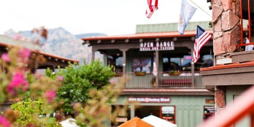
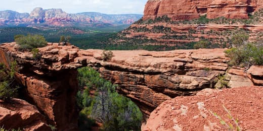
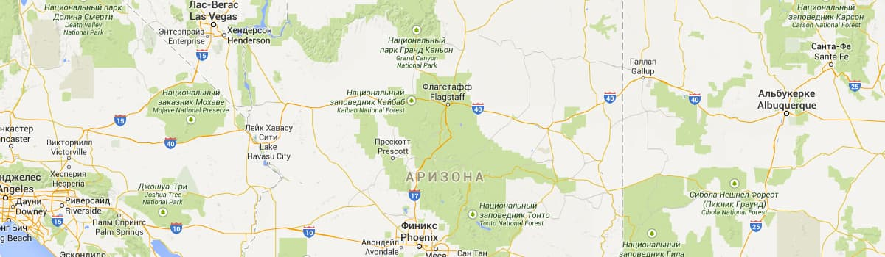

Городок Седона
Седона — небольшой городок в аризоне, заслуживающий большего!
Рассмотрим 5 причин, по которым Седона круче, чем гранд каньон!
Настоящий
- №1 -
городокСедона не аттракцион для туристов, там течет своя жизнь
 Жилье
Рекомендуем пожить в настоящем мотеле, все как в кино!
Еда
Всегда заказывайте фирменный бургер,
вы не разочаруетесь!Сувениры
Не только китайского,
но и местного производства!
Там есть
- №2 -
мост дьяволаДа, по нему можно пройти! Если вы осмелитесь, конечно!
 Небольшая
- №3 -
площадьВсе интересные места находятся очень близко
Красивая
- №4 -
дорогаЕхать в Седону из Лас-
Вегаса совсем
не скучно!Мало
- №5 -
туристовБольшинство едет в Гранд Каньон и топпится там
Заинтересовались?
Укажите предполагаемые даты поездки,
и мы покажем вам лучшие предложения гостиниц в Седоне
Туристический городок Седона на карте
